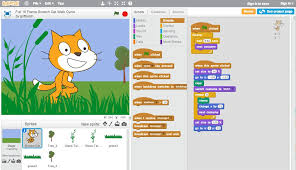
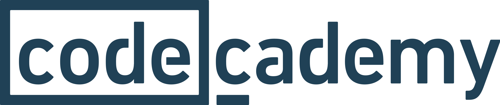

Este artigo tem como objetivo demonstrar algumas ferramentas didáticas e lúdicas que possam servir no processo de ensino-aprendizagem tanto da lógica quanto da programação. Sua estruturação foi realizada à partir da seguinte pergunta norteadora: Quais ferramentas podem servir como subsídio para ensino da programação e lógica nas instituições de ensino?. A metodologia usada foi a exploratória descritiva, onde buscou-se reunir algumas ferramentas práticas, testadas por estudos diversos e que apresentam-se como potencialmente efetivas neste processo. Na conclusiva observou-se que o uso dessas ferramentas lúdicas, intuitivas e didáticas, além de apresentar um baixo custo, pode auxiliar o aluno em seu processo de ensino e aprendizagem de algoritmos e lógica de programação.
A sociedade como conhecemos hoje não seria possível sem o desenvolvimento tecnológico, que não apenas atua como ferramenta de apoio às tarefas humanas, mas é fator importante na sociedade, pois além de influenciar ela também é influenciada. Quando o termo desenvolvimento tecnológico é aplicado, quer dizer que toda atividade humana age para melhorar, facilitar, automatizar ou possibilitar tarefas antes inimagináveis. Sendo multiforme e dinâmica em função do tempo e das necessidades, ou seja, a tecnologia se aprimora em decorrência da necessidade, independente da área, seja na área educacional, medicamentosa, automobilística, bélica, ambiental, artística, militar, comunicativa ou qualquer que seja a vertente em que seja executado tarefas, a tecnologia se engaja em aprimorar os processos. Fato pelo qual se torna fundamental e indispensável ou ainda irreversível, pois, uma vez desenvolvida e aplicada, sua tendência é de crescer e ser otimizada, se tornando obsoleta apenas mediante ferramenta superior já disponível e estabilizada no mercado (AULER; DELIZOICOV, 2001).
A complexidade que envolve a disciplina está vinculada ao carácter prático e individual da disciplina, uma vez que cada indivíduo possui uma forma particular de pensar e chegar a uma solução, não é possível aplicar e impor uma lógica (uma forma de solução) única e imutável, pois o foco da disciplina é desenvolver a competência de analisar a situação e a problemática, a elaboração de formas para se resolver, tendo em vista que existem inúmeras maneiras de se atingir um mesmo objetivo, podendo duas pessoas trabalhar na mesma empresa e no mesmo setor, atuando da mesma forma, com o mesmo uniforme e no mesmo horário se deparam com elementos variados durante o percurso ao trabalho, um pode preparar sua alimentação ainda em sua residência e o outro pode comprar pelo caminho, mas ambos terão seu almoço, bem como, um pode ir de carro ao trabalho e o outro pode optar por uma bicicleta, portanto, independente das variações de percurso, todos chegam ao seu objetivo final. Desta forma também é a lógica de programação, age para possibilitar a compreensão de como analisar a necessidade e indica as formas que disponibilizamos para a resolução (HEMING, 2018).
A organização Code.org é uma plataforma web, que de forma gratuita é possível praticar atividades lúdicas para a compreensão da lógica, ou seja, para auxiliar no desenvolvimento da análise do cenário e da elaboração de soluções, de maneira didática e intuitiva, utilizando recursos gráficos animados para instruir ao aluno sobre a situação e problemática, bem como orientar a maneira de resolução, que deve ser executada pelo aluno, conforme a Figura 1 demonstra um cenário em que é necessário que o aluno monte a forma de resolução para seguir ao próximo desafio (CODE.ORG, 2020).
Figura 1 - As previsões da tecnologia para 2023

Outra plataforma online e de linguagem de programação, que tem como objetivo estimular e promover o aprendizado de lógica de programação, com recursos visuais didáticos e intuitivos, é indicado aos que não possuem experiência qualquer, não é necessário conhecimento prévio, pois, sua interface é ajustada para tornar a compreensão da problemática e sua resolução de forma prática e livre, ou seja, diferente de outras plataformas do mesmo segmento, permite que o aluno utilize as estruturas para executar as ações que deseja, ele mesmo elabora o cenário e utiliza os recursos apresentados irá utilizar, efetua a implementação (SCRATCH; MIT MEDIA LAB, 2020).
É uma organização educacional voltada ao incentivo e ensino na área de desenvolvimento e programação, dispõe de cursos de linguagens de programação e não apenas de lógica ou algoritmo, como as demais. Permite uma sequência de aprendizado, pois, fornece cursos gratuitos de lógica de programação, apresentando os conceitos, juntamente com atividades de fixação, diferentemente dos demais, em que são mais voltados a prática lúdica, este utiliza recursos visuais simplificados, para a compreensão do assunto visto nos cursos e após a finalização é possível solicitar um certificado de conclusão, bem como, dar continuidade aos estudos e ser introduzido em uma das linguagens de programação que a plataforma fornece como Python, C ou Java, entre várias outras, voltadas ao desenvolvimento web, de jogos, estatístico, de aplicativos ou sites (CODECADEMY, 2020).
Figura 3 - Logo CODEACADEMY
Com a execução deste trabalho, conclui-se que mediante a fundamental necessidade de profissionais competentes, voltados ao desenvolvimento de soluções práticas e viáveis, para situações variadas, em decorrência da progressão tecnológica faz-se necessário o desenvolvimento de tais competências, porém, independentemente de sua relevância, as disciplinas relacionadas a programação, como algoritmos e lógica de programação possuem altas taxas de desistências e reprovações, conforme levantado na literatura disponível, que está voltada a efetuar estudos para a compreensão dos fatores que intensificam a complexidade e desafio encontrado, para tentar amenizar tais fatores.
AULER, D.; DELIZOICOV, D. Alfabetização científico-tecnológica para quê? Ensaio Pesquisa em Educação em Ciências (Belo Horizonte), v. 3, n. 2, p. 122-134, 2001.